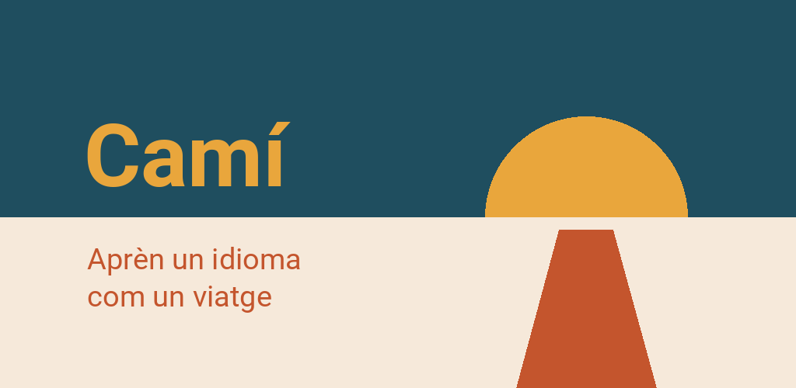

Política de privadesa
Camí · Data: 8 d'octubre de 2026
Això és una traducció. En cas de dubte, preval la versió alemanya.
En poques paraules
Camí no recull res sobre tu. No hi ha cap compte, ni publicitat, ni estadístiques d'ús sobre tu: només comptem totals diaris de la classificació i de «Comentaris», sense noms. El teu progrés es queda al teu dispositiu. Per als exercicis de pronunciació, l'aplicació pot fer servir el micròfon: l'enregistrament s'analitza al dispositiu i no en surt. Camí només es connecta a internet per a tres coses, i totes tres les inicies tu: quan baixes el paquet de veu per als exercicis de pronunciació, quan participes a la classificació i quan ens envies alguna cosa amb «Comentaris». Per saber si hi ha una actualització, Camí ho pregunta a l'aplicació Play Store del teu telèfon. A banda d'això, l'aplicació no baixa res.
Responsable
Finn Cardona SantaféPfaffenstraße 22
23552 Lübeck
Alemanya
Correu electrònic: appentwicklung@mein.gmx
Al teu dispositiu
Què es desa
El teu progrés, els teus objectius i la configuració es desen a la memòria de l'aplicació al teu dispositiu. Per exemple: les lliçons acabades, el dia que vas completar una etapa, les recompenses obtingudes, les caixes de les teves targetes de vocabulari, els objectius diari i setmanal, els punts acumulats, la teva sèrie, el resultat de la prova de nivell, els idiomes triats a «Parlo» i «Aprenc», i la configuració de visualització. Si participes a la classificació, s'hi afegeixen el teu número aleatori amb la seva clau (com una contrasenya) i l'última llista baixada (vegeu «Classificació»).
No es recull cap nom, cap adreça electrònica, cap identificador del dispositiu ni cap ubicació. Desar aquestes dades al teu dispositiu és estrictament necessari per a l'aplicació; no cal cap consentiment (§ 25, apartat 2, núm. 2 de la llei alemanya TDDDG).
En llegir en veu alta
Quan fas que es llegeixi en veu alta una paraula o una frase, Camí passa el text a la síntesi de veu del teu dispositiu i només hi tria veus marcades com a fora de línia. Quina síntesi de veu fa servir el teu dispositiu i què fa amb els textos ho decideix el fabricant (per exemple, Google o Samsung); s'hi apliquen les seves condicions.
En parlar
En els exercicis de pronunciació, el micròfon escolta mentre parles. El reconeixement es fa només al dispositiu: l'enregistrament s'analitza immediatament, no es desa enlloc i no s'envia. Perquè la puguis escoltar, la darrera gravació es queda a la memòria de treball fins que tornes a parlar o surts de l'exercici. Per escoltar es fa servir el paquet de veu (Vosk), que baixes abans (vegeu «Paquet de veu per als exercicis de pronunciació»); després es queda al teu dispositiu i funciona sense connexió.
Abans de demanar el micròfon, Camí t'ho pregunta, i pots dir que no. També pots desactivar més endavant l'escolta per a cada idioma, o desactivar els exercicis de pronunciació temporalment o del tot (Configuració → Pronunciació). El curs continua complet en qualsevol cas: sense escolta, repeteixes les frases sense que es comprovi res. On Camí podria escoltar, reps aleshores 2 punts (XP) menys per exercici de pronunciació; això només afecta els punts a l'aplicació i a la classificació, no el curs.
Còpia de seguretat
Android pot incloure les dades de les aplicacions instal·lades a la còpia de seguretat del dispositiu al teu compte de Google. Que passi o no depèn d'una opció del teu telèfon, no de l'aplicació; a la còpia de seguretat s'hi aplica la política de privadesa de Google.
Independentment d'això, pots exportar el teu progrés en un fitxer (Configuració → Nivell → Exporta el progrés) i guardar-lo on vulguis. Què passa amb aquest fitxer ho decideixes només tu. Si participes a la classificació, el teu número aleatori i la seva clau també hi són: qui passa el fitxer a algú altre li passa el seu lloc a la classificació.
Esborrar
A l'aplicació: Configuració → Nivell → Reinicia, si vols només per a un idioma. Qui desinstal·la l'aplicació n'esborra totes les dades del dispositiu; una còpia de seguretat del dispositiu o un fitxer exportat no queden afectats. La teva entrada a la classificació l'esborra l'interruptor amb què la desactives; si desinstal·les abans, la teva entrada caduca al cap de 60 dies.
Connexions a internet
Camí només es connecta quan tu ho inicies. Els cursos, les imatges i els mapes ja són dins de l'aplicació; els teus enregistraments i el teu progrés no surten mai del dispositiu. Aquestes són avui totes les connexions:
Paquet de veu per als exercicis de pronunciació
Quan: quan actives l'escolta en un exercici de pronunciació o a la configuració i el paquet d'aquell idioma encara no és al teu dispositiu; una vegada per idioma. L'aplicació n'indica abans la mida (ara, entre 40 i 50 MB, aproximadament).
Què s'hi envia: les dades de connexió habituals d'una baixada: l'adreça del fitxer, la teva adreça IP i un identificador del programari utilitzat. Res sobre tu, el teu progrés o els teus enregistraments.
On: a alphacephei.com, el servidor d'Alpha Cephei Inc., que publica el programari de reconeixement Vosk; el servidor és actualment a Alemanya. La teva adreça IP arriba allà, no a nosaltres: no la rebem mai.
Base jurídica: la baixada es fa a petició teva, perquè l'exercici faci el que has activat (art. 6.1.b) del RGPD).
Desactivar: si no baixes el paquet, aquesta connexió no existeix. Un paquet baixat l'esborres del dispositiu a Configuració → Pronunciació.
Classificació (voluntària)
Sense ella no et falta res. Està desactivada fins que l'actives i hi dones el teu consentiment; hi pots participar a partir dels 16 anys. Aleshores el nostre servidor rep:
- el teu sobrenom,
- un número aleatori que tria el teu mateix dispositiu, amb una clau amb què el servidor et reconeix (només en desa l'empremta),
- els teus punts per exercici amb el dia,
- amb els punts, la llengua que aprens i la de les explicacions, i la versió de l'aplicació, només per als totals diaris (vegeu «Què porta cada petició»),
- i, com en qualsevol connexió, la teva adreça IP.
Per a què: perquè surtis en una classificació amb altres persones. Tothom qui hi participa veu els sobrenoms i els punts; per tant, no facis servir el teu nom real. Si un sobrenom és ofensiu, el retirem; els teus punts es mantenen. Ningú més no rep les dades. Només s'analitza el total de tothom: quantes persones hi participen i quants punts s'obtenen per dia, tipus d'exercici, llengua i versió de l'aplicació, sense sobrenoms ni números aleatoris.
On: al nostre propi servidor. Lloguem la màquina a IONOS SE (centre de dades a Espanya, és a dir, a la UE); IONOS és el nostre encarregat del tractament i segueix les nostres instruccions.
La base jurídica és el teu consentiment (art. 6.1.a) del RGPD). El retires desactivant la classificació; el que hagi passat fins aleshores continua sent lícit (art. 7.3 del RGPD).
Quant de temps: si desactives la classificació, s'esborra la teva entrada; si en aquell moment no tens connexió, tan bon punt tornis a estar en línia. Si en 60 dies no arriba res de tu, s'esborra sola. Una entrada esborrada es queda com a màxim 14 dies a les còpies de seguretat del servidor.
Comentaris
Amb «Comentaris», a dalt de la pantalla, ens envies un error o un desig. No s'envia res fins que no toques «Envia», i només el que indica la finestra: el teu text i el motiu; en un exercici, el seu lloc al curs i la solució; l'idioma que aprens i el que parles, la versió de l'aplicació i el sistema; i una captura de pantalla, tret que la desmarquis. A més, com en qualsevol connexió, la teva adreça IP; queda al registre del servidor web, no a l'avís mateix.
L'avís no porta cap nom ni cap identificador. Per això no et podem respondre, ni tampoc trobar-lo més endavant; així doncs, no hi escriguis res personal.
On: al mateix servidor que la classificació (IONOS SE, vegeu-ho allà).
La base jurídica és el nostre interès legítim a corregir els errors que tu ens envies (art. 6.1.f) del RGPD). Quant de temps: al nostre servidor fins que l'hàgim llegit, com a màxim 90 dies, i 14 dies més a les còpies de seguretat. Després, sense text ni captura, només en guardem el dia que va arribar, el tipus, les dues llengües, la versió de l'aplicació i què se'n va fer, per comptar quants avisos arriben i com de ràpid els tractem.
Què porta cada petició
El que Camí envia al nostre servidor (els punts de la classificació o «Comentaris») porta la llengua que aprens i la de les explicacions, la versió de l'aplicació i el tipus d'instal·lació (des del Play Store o una versió de prova). Només es compten en totals diaris, per exemple «avui 340 punts aprenent alemany en català»: a la classificació no es desen mai amb la teva entrada; a «Comentaris», només a l'avís, que de tota manera no porta cap nom. El servidor també compta quantes peticions arriben cada hora i de quin tipus són (per exemple «enviar punts» o «veure la classificació»), sense adreça i sense número.
Per a què: per veure què s'aprèn i quanta feina té el servidor. Els totals són anònims; el que s'envia es regeix per la base legal de la classificació o de «Comentaris» (vegeu-hi).
El registre del servidor web
En la classificació i en «Comentaris», el servidor web que hi ha davant del nostre servei anota cada petició amb la teva adreça IP al seu registre. Això serveix per a un funcionament segur, per exemple per detectar atacs, i és el nostre interès legítim (art. 6.1.f) del RGPD). El registre s'esborra al cap de 7 dies. Abans, sense guardar cap adreça, en comptem quantes connexions diferents han arribat cada dia, quantes ja havien vingut els dies anteriors, quantes peticions ha enviat cadascuna i de quin país venien (consultat al nostre propi servidor); només en queden aquests totals (finalitats estadístiques, art. 5.1.b) del RGPD). El servei mateix no desa cap adreça IP.
Avís d'actualització a través del Play Store
Per saber si hi ha una versió nova de Camí, l'aplicació ho pregunta a l'aplicació Play Store del teu telèfon (les «actualitzacions dins de l'aplicació» de Google). Camí no estableix cap connexió pròpia per a això i no dona al Play Store res sobre tu. El Play Store envia a Google les seves pròpies dades, per exemple dades del dispositiu i la versió de l'aplicació; s'hi apliquen les condicions del servei de Google Play i la política de privadesa de Google.
A banda d'això, no hi ha cap cessió a tercers, cap xarxa publicitària ni cap servei d'anàlisi.
Els teus drets
El que hi ha al teu dispositiu és teu i ho pots consultar i esborrar allà en qualsevol moment (vegeu «Què es desa» i «Esborrar»). Sobre les dades del nostre servidor tens dret
- d'accés (art. 15 del RGPD) i de supressió (art. 17): per a la classificació, l'aplicació mateixa te'ls dona tots dos: Configuració → «Què es desa sobre tu» i l'interruptor de la classificació,
- de rectificació (art. 16), de limitació (art. 18) i de portabilitat (art. 20),
- d'oposició a un tractament basat en el nostre interès legítim (art. 21),
- de retirar el teu consentiment amb efecte per al futur (art. 7.3): en la classificació, desactivant-la.
Per fer-ho, escriu-nos a l'adreça indicada a dalt. Ara bé, no et podem atribuir un avís enviat amb «Comentaris», perquè no porta cap identificador (art. 11 del RGPD).
A més, tens dret a presentar una reclamació davant d'una autoritat de control de protecció de dades (art. 77 del RGPD), per exemple al teu país o al teu lloc de residència. L'autoritat competent per a nosaltres és l'Unabhängiges Landeszentrum für Datenschutz Schleswig-Holstein (l'autoritat de protecció de dades de l'estat federat de Slesvig-Holstein), Holstenstraße 98, 24103 Kiel, Alemanya, www.datenschutzzentrum.de.
Canvis
Si canvia alguna cosa en el tractament de les dades, aquesta pàgina s'actualitzarà i es canviarà la data de dalt.